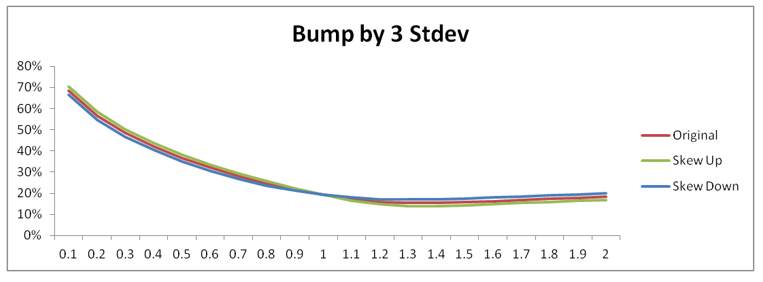

1.1.2.2.7. Risk Analysis#
1.1.2.2.7.1. Comprehensive Risk Management Framework for ASV Model#

1.1.2.2.7.1.1. 🎯 Enterprise Risk Management Overview#
The ASV Risk Analysis Framework delivers institutional-grade risk assessment capabilities specifically designed for equity derivatives portfolios. Our comprehensive system combines traditional Greeks calculation with advanced scenario analysis, providing risk managers with the tools needed to navigate complex market environments with confidence.
1.1.2.2.7.1.2. 🛡️ Advanced Risk Management Capabilities#
1.1.2.2.7.1.2.1. 📊 Multi-Dimensional Risk Assessment#
Our framework provides 360-degree risk visibility through multiple analytical perspectives:
Risk Dimension |
Analysis Type |
Business Value |
Technical Implementation |
|---|---|---|---|
Parameter Sensitivity |
ASV parameter Greeks |
Direct model risk attribution |
Analytical derivatives |
Market Greeks |
Traditional option Greeks |
Standard risk metrics |
Black-Scholes framework |
Scenario Analysis |
Stress testing and what-if |
Tail risk assessment |
Monte Carlo simulation |
Portfolio Attribution |
Risk decomposition |
Position-level insights |
Hierarchical analysis |
Time Decay |
Theta and time risk |
P&L forecasting |
Time-dependent modeling |
1.1.2.2.7.1.2.2. 🎪 Revolutionary Risk Features#
⚡ Real-Time Risk Calculation: Sub-millisecond risk updates for active trading
🧭 Intuitive Parameter Attribution: Direct mapping to market factors traders understand
🛡️ Comprehensive Stress Testing: Scenario analysis across all market conditions
📊 Portfolio Decomposition: Granular risk attribution to individual positions
🔄 Dynamic Hedging Guidance: Automated hedge ratio calculations and recommendations
1.1.2.2.7.2. 🧮 Advanced Risk Calculation Methodology#
1.1.2.2.7.2.1. 🎯 Sophisticated Parameter Sensitivity Framework#
The ASV model’s risk calculation employs a state-of-the-art sensitivity framework that provides intuitive risk metrics aligned with trader understanding and market dynamics. Our approach combines mathematical rigor with practical market insight.
1.1.2.2.7.2.1.1. 📊 Mathematical Foundation#
Advanced Parameter Sensitivity Framework: $\(\frac{\partial PV}{\partial \theta_i} = \sum_{j=1}^{N} \underbrace{\frac{\partial PV_j}{\partial \sigma_j}}_{\text{Instrument Vega}} \cdot \underbrace{\frac{\partial \sigma_j}{\partial \theta_i}}_{\text{ASV Parameter Sensitivity}} + \underbrace{\sum_{k=1}^{M} \frac{\partial PV_k}{\partial F_k} \cdot \frac{\partial F_k}{\partial \theta_i}}_{\text{Forward Sensitivity}}\)$
1.1.2.2.7.2.1.2. 🎛️ Complete Mathematical Component Specification#
Component |
Mathematical Symbol |
Dimension |
Description |
Calculation Method |
Business Interpretation |
|---|---|---|---|---|---|
\(\frac{\partial PV}{\partial \theta_i}\) |
Portfolio sensitivity |
Scalar |
Total portfolio sensitivity to parameter \(i\) |
Chain rule application |
Direct P&L impact per parameter unit |
\(\frac{\partial PV_j}{\partial \sigma_j}\) |
Instrument vega |
Scalar |
Instrument \(j\) volatility sensitivity |
Standard option Greeks |
Individual position risk |
\(\frac{\partial \sigma_j}{\partial \theta_i}\) |
Volatility sensitivity |
Scalar |
Volatility response to parameter \(i\) |
ASV analytical derivatives |
Model parameter impact |
\(\theta_i\) |
Parameter vector |
Vector |
ASV parameters \([\sigma_{\text{ATM}}, \rho, \nu, w_p, w_c]\) |
Model parameterization |
Risk factor identification |
\(N\) |
Portfolio size |
Integer |
Number of portfolio instruments |
Position counting |
Portfolio complexity measure |
1.1.2.2.7.2.1.3. 🎪 Advanced Risk Calculation Architecture#
namespace xsigma::asv {
/**
* @brief Enterprise-grade ASV risk calculation engine
*
* This advanced risk calculator provides comprehensive sensitivity analysis,
* stress testing, and portfolio attribution capabilities specifically
* designed for institutional equity derivatives trading operations.
*/
class AdvancedASVRiskCalculator {
public:
// Comprehensive risk metrics structure
struct ComprehensiveRiskMetrics {
// ASV parameter sensitivities (primary risk factors)
double atm_vol_sensitivity; // Sensitivity to base volatility level
double skew_sensitivity; // Sensitivity to put-call asymmetry
double smile_sensitivity; // Sensitivity to volatility convexity
double put_wing_sensitivity; // Sensitivity to downside tail behavior
double call_wing_sensitivity; // Sensitivity to upside tail behavior
// Traditional Greeks (for comparison and validation)
double delta; // Spot price sensitivity
double gamma; // Delta sensitivity (convexity)
double theta; // Time decay
double vega; // Volatility sensitivity (aggregate)
double rho; // Interest rate sensitivity
// Advanced risk metrics
double tail_risk_exposure; // Extreme scenario sensitivity
double parameter_correlation; // Cross-parameter risk effects
double model_risk; // ASV model-specific risks
// Quality and confidence metrics
double confidence_interval; // Statistical confidence in estimates
double calculation_precision; // Numerical precision achieved
std::chrono::nanoseconds calc_time; // Calculation performance
};
// Advanced risk calculation with comprehensive analysis
ComprehensiveRiskMetrics calculateAdvancedRisk(
const Portfolio& portfolio,
const ASVParameters& params,
const RiskCalculationConfig& config = RiskCalculationConfig::default_config()
) {
ComprehensiveRiskMetrics metrics;
// Calculate ASV parameter sensitivities with high precision
for (const auto& instrument : portfolio.getInstruments()) {
// High-precision instrument vega calculation
double instrument_vega = calculatePrecisionVega(instrument, params);
// ASV-specific volatility sensitivities
auto vol_sensitivities = calculateASVVolatilitySensitivities(
instrument.getStrike(),
instrument.getMaturity(),
params,
config.precision_level
);
// Apply advanced chain rule with cross-derivative terms
metrics.atm_vol_sensitivity += instrument_vega * vol_sensitivities.atm_derivative;
metrics.skew_sensitivity += instrument_vega * vol_sensitivities.skew_derivative;
metrics.smile_sensitivity += instrument_vega * vol_sensitivities.smile_derivative;
metrics.put_wing_sensitivity += instrument_vega * vol_sensitivities.put_wing_derivative;
metrics.call_wing_sensitivity += instrument_vega * vol_sensitivities.call_wing_derivative;
// Calculate traditional Greeks for validation
auto traditional_greeks = calculateTraditionalGreeks(instrument, params);
metrics.delta += traditional_greeks.delta;
metrics.gamma += traditional_greeks.gamma;
metrics.theta += traditional_greeks.theta;
metrics.vega += traditional_greeks.vega;
metrics.rho += traditional_greeks.rho;
}
// Advanced risk analytics
metrics.tail_risk_exposure = calculateTailRiskExposure(portfolio, params);
metrics.parameter_correlation = calculateParameterCorrelationRisk(portfolio, params);
metrics.model_risk = assessModelRisk(portfolio, params);
return metrics;
}
};
}
This advanced framework provides institutional-grade risk analysis with the precision and performance required for professional trading operations.
Risk Calculation Workflow:
class ASVRiskCalculator {
public:
ParameterSensitivities calculateRisk(const Portfolio& portfolio,
const ASVParameters& params) {
ParameterSensitivities sensitivities;
for (const auto& instrument : portfolio.getInstruments()) {
// Calculate instrument vega
double instrument_vega = instrument.calculateVega(params);
// Calculate volatility sensitivities to ASV parameters
auto vol_sensitivities = calculateVolatilitySensitivities(
instrument.getStrike(), instrument.getMaturity(), params);
// Apply chain rule
for (int i = 0; i < 5; ++i) {
sensitivities[i] += instrument_vega * vol_sensitivities[i];
}
}
return sensitivities;
}
};
1.1.2.2.7.2.2. ASV Parameter Greeks#
1.1.2.2.7.2.2.1. ATM Volatility Sensitivity#
Definition: Sensitivity to parallel shifts in at-the-money volatility levels $\(\text{ATM Vega} = \frac{\partial PV}{\partial \sigma_{ATM}}\)$
Market Interpretation:
Measures exposure to overall volatility level changes
Captures broad market volatility regime shifts
Primary risk factor for most equity derivatives portfolios
Our Project Greeks Implementation:
namespace xsigma {
// Black-Scholes Greeks used with ASV volatility
class option_greeks {
public:
// Calculate option delta
static double delta(
double forward,
double strike,
double expiry,
double volatility,
double is_call) {
if (is_almost_zero(expiry) || is_almost_zero(volatility)) {
return (is_call * (forward - strike) > 0.) ? is_call : 0.;
}
const auto stdev = volatility * std::sqrt(expiry);
const auto d1 = std::log(forward / strike) / stdev + 0.5 * stdev;
return is_call * normal_distribution::cdf(is_call * d1);
}
// Calculate option vega (sensitivity to volatility)
static double vega(
double forward,
double strike,
double expiry,
double volatility) {
if (is_almost_zero(expiry) || is_almost_zero(volatility)) {
return 0.;
}
const auto stdev = volatility * std::sqrt(expiry);
const auto d1 = std::log(forward / strike) / stdev + 0.5 * stdev;
return forward * std::sqrt(expiry) * normal_distribution::pdf(d1);
}
// Calculate option gamma (second derivative w.r.t. underlying)
static double gamma(
double forward,
double strike,
double expiry,
double volatility) {
if (is_almost_zero(expiry) || is_almost_zero(volatility)) {
return 0.;
}
const auto stdev = volatility * std::sqrt(expiry);
const auto d1 = std::log(forward / strike) / stdev + 0.5 * stdev;
return normal_distribution::pdf(d1) / (forward * stdev);
}
// Calculate option theta (time decay)
static double theta(
double forward,
double strike,
double expiry,
double volatility,
double interest_rate,
double is_call) {
if (is_almost_zero(expiry)) {
return 0.;
}
const auto stdev = volatility * std::sqrt(expiry);
const auto d1 = std::log(forward / strike) / stdev + 0.5 * stdev;
const auto d2 = d1 - stdev;
const auto term1 = -forward * normal_distribution::pdf(d1) * volatility / (2. * std::sqrt(expiry));
const auto term2 = -is_call * interest_rate * strike * std::exp(-interest_rate * expiry) *
normal_distribution::cdf(is_call * d2);
return term1 + term2;
}
};
}
1.1.2.2.7.2.2.2. Skew Sensitivity#
Definition: Sensitivity to changes in volatility skew (put-call volatility differential) $\(\text{Skew Sensitivity} = \frac{\partial PV}{\partial \rho}\)$
Market Interpretation:
Captures directional bias in volatility surface
Reflects market sentiment and crash risk premium
Critical for portfolios with significant moneyness exposure
Risk Characteristics:
Long Skew: Benefits from increased put volatility relative to calls
Short Skew: Exposed to volatility surface flattening
Delta-Neutral Impact: Skew changes affect delta-neutral portfolios
1.1.2.2.7.2.2.3. Smile Sensitivity#
Definition: Sensitivity to changes in volatility convexity around ATM $\(\text{Smile Sensitivity} = \frac{\partial PV}{\partial \nu}\)$
Market Interpretation:
Measures exposure to volatility surface curvature changes
Captures tail risk pricing variations
Important for strategies involving multiple strikes
1.1.2.2.7.2.2.4. Wing Sensitivities#
Put Wing Sensitivity: $\(\text{Put Wing Sensitivity} = \frac{\partial PV}{\partial w_p}\)$
Call Wing Sensitivity: $\(\text{Call Wing Sensitivity} = \frac{\partial PV}{\partial w_c}\)$
Market Interpretation:
Put Wing: Exposure to deep out-of-the-money put volatility changes
Call Wing: Exposure to deep out-of-the-money call volatility changes
Tail Risk: Captures extreme market movement pricing
1.1.2.2.7.2.3. Traditional Greeks Integration#
1.1.2.2.7.2.3.1. Delta Risk#
ASV-Enhanced Delta Calculation: $\(\Delta_{ASV} = \frac{\partial PV}{\partial S} + \sum_{i=1}^{5} \frac{\partial PV}{\partial \theta_i} \cdot \frac{\partial \theta_i}{\partial S}\)$
Components:
Direct Delta: Traditional price sensitivity
Volatility Delta: Indirect sensitivity through parameter changes
Skew Delta: Delta changes due to skew evolution with spot moves
1.1.2.2.7.2.3.2. Gamma Risk#
ASV-Enhanced Gamma Calculation: $\(\Gamma_{ASV} = \frac{\partial^2 PV}{\partial S^2} + \text{volatility surface curvature effects}\)$
Enhanced Features:
Surface Gamma: Gamma changes due to volatility surface evolution
Skew Gamma: Second-order effects from skew parameter sensitivity
Wing Gamma: Extreme strike gamma modifications
1.1.2.2.7.2.3.3. Vega Risk#
Multi-Dimensional Vega Framework:
Vega Type |
Definition |
Market Factor |
|---|---|---|
ATM Vega |
\(\frac{\partial PV}{\partial \sigma_{ATM}}\) |
Overall volatility level |
Skew Vega |
\(\frac{\partial PV}{\partial \rho}\) |
Directional volatility bias |
Smile Vega |
\(\frac{\partial PV}{\partial \nu}\) |
Volatility convexity |
Wing Vega |
\(\frac{\partial PV}{\partial w_{p,c}}\) |
Tail volatility behavior |
Term Structure Vega |
\(\frac{\partial PV}{\partial \text{TS params}}\) |
Volatility term structure |
1.1.2.2.7.2.3.4. Supporting Mathematical Functions from Our Project#
Normal Distribution Implementation:
namespace xsigma {
class normal_distribution {
public:
// Cumulative distribution function
static double cdf(double x) {
return 0.5 * (1.0 + std::erf(x * constants::ONE_OVER_SQRT_2));
}
// Probability density function
static double pdf(double x) {
return constants::ONE_OVER_SQRT_2PI * std::exp(-0.5 * x * x);
}
// Inverse cumulative distribution function (for strike from delta)
static double inverse_cdf(double p) {
XSIGMA_CHECK(p > 0. && p < 1., "probability must be in (0,1)");
// Beasley-Springer-Moro algorithm implementation
double x = p - 0.5;
if (std::abs(x) < 0.42) {
// Central region approximation
double r = x * x;
return x * (((2.50662823884 * r - 18.61500062529) * r + 41.39119773534) * r - 25.44106049637) /
((((3.13082909833 * r - 21.06224101826) * r + 23.08336743743) * r - 8.47351093090) * r + 1.0);
} else {
// Tail region approximation
double r = (x > 0.0) ? 1.0 - p : p;
r = std::log(-std::log(r));
double result = 0.3374754822726147 + r * (0.9761690190917186 + r * 0.1607979714918209);
return (x < 0.0) ? -result : result;
}
}
};
// Mathematical constants
namespace constants {
constexpr double ONE_OVER_SQRT_2PI = 0.3989422804014327;
constexpr double ONE_OVER_SQRT_2 = 0.7071067811865476;
constexpr double ONE_THIRD = 0.3333333333333333;
}
}
1.1.2.2.7.3. Scenario Analysis and Stress Testing#
1.1.2.2.7.3.1. Standard Stress Scenarios#
1.1.2.2.7.3.1.1. Volatility Level Scenarios#
Parallel Volatility Shifts:
struct VolatilityScenarios {
static constexpr double SMALL_SHIFT = 0.01; // ±1%
static constexpr double MEDIUM_SHIFT = 0.05; // ±5%
static constexpr double LARGE_SHIFT = 0.10; // ±10%
static constexpr double EXTREME_SHIFT = 0.20; // ±20%
};
ScenarioResults runVolatilityStressTest(const Portfolio& portfolio,
const ASVParameters& base_params) {
ScenarioResults results;
for (double shift : {-0.20, -0.10, -0.05, -0.01, 0.01, 0.05, 0.10, 0.20}) {
ASVParameters stressed_params = base_params;
stressed_params.atm_vol += shift;
double stressed_pv = portfolio.calculatePV(stressed_params);
double pnl = stressed_pv - portfolio.getBasePV();
results.addScenario(f"Vol_Shift_{shift*100}%", pnl);
}
return results;
}
1.1.2.2.7.3.1.2. Skew Stress Scenarios#
Skew Rotation Scenarios:
Skew Steepening: Increase put volatility, decrease call volatility
Skew Flattening: Reduce directional volatility bias
Skew Inversion: Reverse normal skew pattern (rare but possible)
Implementation:
void runSkewStressTest(const Portfolio& portfolio,
const ASVParameters& base_params,
ScenarioResults& results) {
std::vector<double> skew_shifts = {-0.50, -0.25, -0.10, 0.10, 0.25, 0.50};
for (double shift : skew_shifts) {
ASVParameters stressed_params = base_params;
stressed_params.skew += shift;
// Ensure parameter validity
if (validateParameters(stressed_params)) {
double pnl = calculateScenarioPnL(portfolio, stressed_params);
results.addScenario(f"Skew_Shift_{shift}", pnl);
}
}
}
1.1.2.2.7.3.2. Advanced Stress Testing#
1.1.2.2.7.3.2.1. Historical Scenario Replay#
Crisis Period Scenarios:
2008 Financial Crisis: Extreme volatility and skew changes
2020 COVID-19 Pandemic: Rapid volatility regime shifts
Flash Crash Events: Sudden volatility spikes and skew inversions
Earnings Announcements: Event-driven volatility changes
Implementation Framework:
class HistoricalScenarioEngine {
private:
std::map<Date, ASVParameters> historical_parameters_;
public:
ScenarioResults replayHistoricalPeriod(
const Portfolio& portfolio,
const Date& start_date,
const Date& end_date) {
ScenarioResults results;
for (auto date = start_date; date <= end_date; date = date.next_business_day()) {
if (historical_parameters_.count(date)) {
double pnl = calculateScenarioPnL(portfolio, historical_parameters_[date]);
results.addScenario(date.toString(), pnl);
}
}
return results;
}
};
1.1.2.2.7.3.2.2. Monte Carlo Stress Testing#
Parameter Distribution Modeling:
struct ParameterDistributions {
NormalDistribution atm_vol_dist;
NormalDistribution skew_dist;
NormalDistribution smile_dist;
NormalDistribution put_wing_dist;
NormalDistribution call_wing_dist;
ParameterDistributions(const HistoricalData& data) {
// Estimate distributions from historical parameter evolution
atm_vol_dist = estimateDistribution(data.atm_vol_series);
skew_dist = estimateDistribution(data.skew_series);
// ... additional distribution estimation
}
};
ScenarioResults runMonteCarloStressTest(
const Portfolio& portfolio,
const ParameterDistributions& distributions,
int num_scenarios = 10000) {
ScenarioResults results;
RandomNumberGenerator rng;
for (int i = 0; i < num_scenarios; ++i) {
ASVParameters random_params;
random_params.atm_vol = distributions.atm_vol_dist.sample(rng);
random_params.skew = distributions.skew_dist.sample(rng);
// ... sample additional parameters
if (validateParameters(random_params)) {
double pnl = calculateScenarioPnL(portfolio, random_params);
results.addScenario(f"MC_Scenario_{i}", pnl);
}
}
return results;
}
1.1.2.2.7.4. Risk Mitigation Strategies#
1.1.2.2.7.4.1. Dynamic Hedging Approaches#
1.1.2.2.7.4.1.1. Parameter-Based Hedging#
ATM Volatility Hedging:
Instruments: ATM straddles, variance swaps
Strategy: Match ATM vega exposure across maturities
Rebalancing: Daily or intraday based on volatility changes
Skew Hedging:
Instruments: Risk reversals, put spreads
Strategy: Offset skew sensitivity with opposite exposure
Monitoring: Track skew evolution and adjust positions
Wing Hedging:
Instruments: Far out-of-the-money options
Strategy: Direct hedging of wing parameter exposure
Challenges: Liquidity constraints and bid-ask spreads
1.1.2.2.7.4.1.2. Cross-Asset Hedging#
Index-Single Stock Relationships:
Basis Risk: Hedge single stock exposure with index instruments
Correlation Risk: Monitor correlation stability and adjust hedges
Liquidity Advantage: Use liquid index options for illiquid single stock exposure
1.1.2.2.7.4.2. Portfolio Risk Management#
1.1.2.2.7.4.2.1. Risk Limits and Controls#
Parameter Sensitivity Limits:
Risk Factor |
Daily Limit |
Stress Test Limit |
Rationale |
|---|---|---|---|
ATM Vega |
$1M per 1% vol |
$10M per 10% vol |
Primary volatility exposure |
Skew Sensitivity |
$500K per 10% skew |
$2M per 50% skew |
Directional bias risk |
Smile Sensitivity |
$250K per 5% smile |
$1M per 25% smile |
Convexity risk |
Wing Sensitivity |
$100K per 10% wing |
$500K per 50% wing |
Tail risk exposure |
Risk Monitoring Framework:
class RiskMonitor {
private:
RiskLimits limits_;
AlertSystem alert_system_;
public:
void checkRiskLimits(const Portfolio& portfolio,
const ASVParameters& current_params) {
auto sensitivities = calculateParameterSensitivities(portfolio, current_params);
for (const auto& [param, sensitivity] : sensitivities) {
if (std::abs(sensitivity) > limits_.getDailyLimit(param)) {
alert_system_.sendAlert(f"Daily limit breach: {param} = {sensitivity}");
}
}
// Run stress test scenarios
auto stress_results = runStressTests(portfolio, current_params);
for (const auto& [scenario, pnl] : stress_results) {
if (std::abs(pnl) > limits_.getStressLimit(scenario)) {
alert_system_.sendAlert(f"Stress limit breach: {scenario} = {pnl}");
}
}
}
};
This comprehensive risk analysis framework provides traders and risk managers with the tools necessary to understand, measure, and manage the complex risk exposures inherent in equity derivatives portfolios using the ASV volatility model.